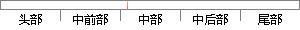

我们首先从二维空间下进行定位分析。
片段位置图

相似结果|
相似片段 1：只是增加了一个维度的信息，但是实际上三维空间的情况要比二维平面复杂的多，因此我们不能把二维平面上的定位技术简单的拓展到三维空间使用。本章我们将首先对 2D定位和 3D 定位进行分析比较，说明 3D
|
※ 片段修改建议 ※
近似词参考：- 我们：咱们
- 首先：起首
- 进行：举行
- 分析：阐发 阐明 剖析
系统自动生成语句：咱们起首从二维空间下举行定位阐发。
注：本片段修改建议为系统自动生成，仅供参考。